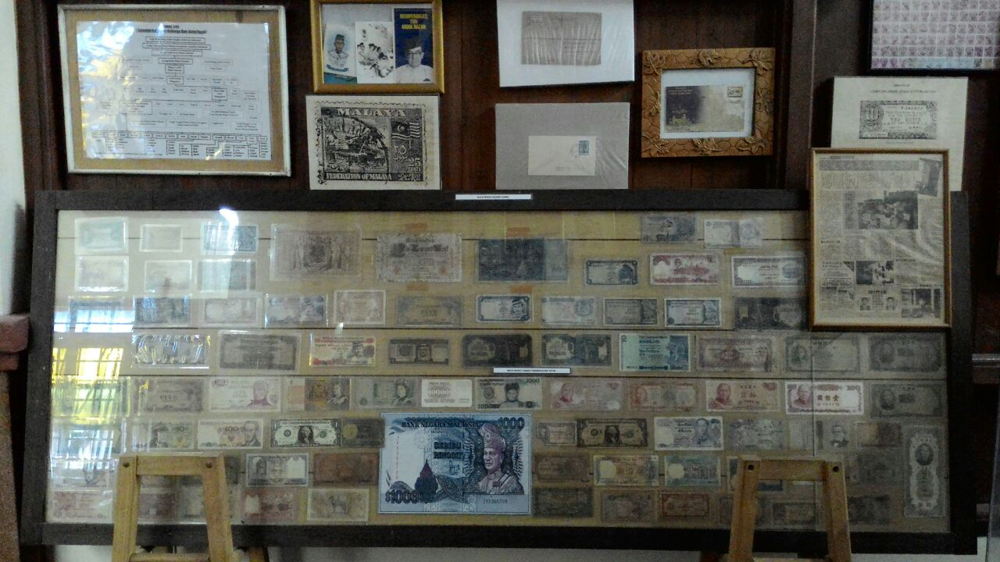
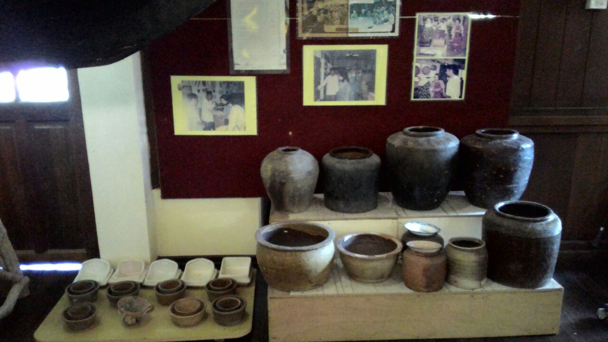
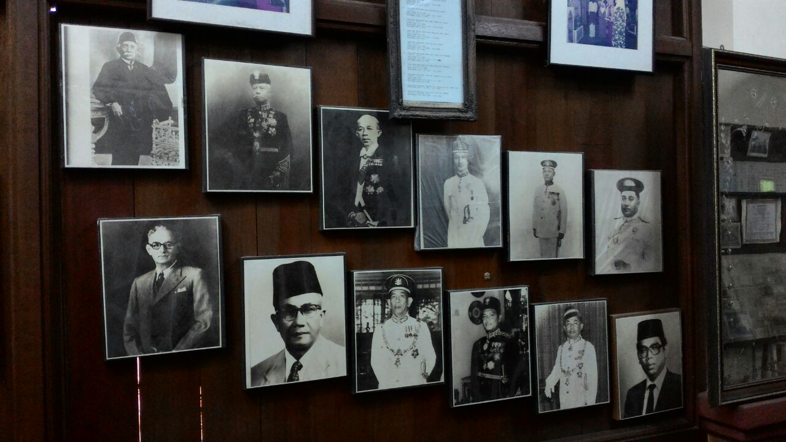
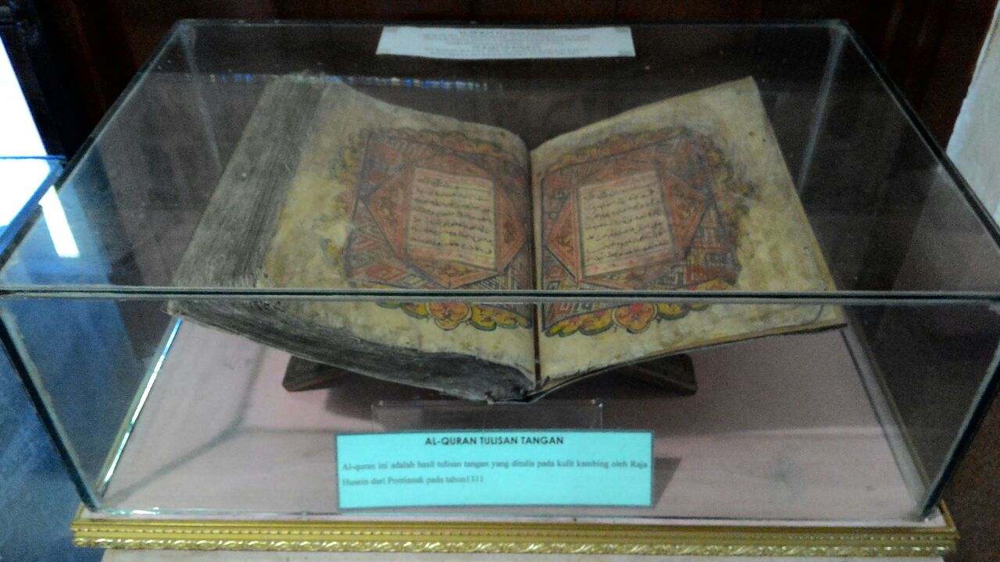

See and Experience
Collections of Bugis Museum

Collection of Currency
A range of currency that was used in the past.

Collection of Tools
Tools that was used by the community of Bugis.

Potraits of Leaders
The leader figures that are descendants of Bugis.

Late Ambok Tuwo bin Ambok Mariyoh
Bugis figure of Johor.

Traiditonal Attire of Bugis soldier
The clothes that often wore by soldier of Bugis.

Newspaper Cutting of Abdullah Ahmad, the owner of the museum
It was taken from Berita Minggu about Abdullah Ahmad.

The Oldest Collection
Made by goat skin and was handwritten by Raja Hussein from Pontianak around the year 1311.

House by Petta Lemo Choa
It was left by "Petta Lemo Choa" Lemo Apek Bone

Old Weapons
Weapons that was once used by the Malays in Nusantara.